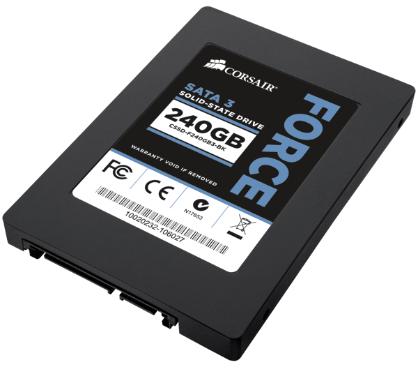
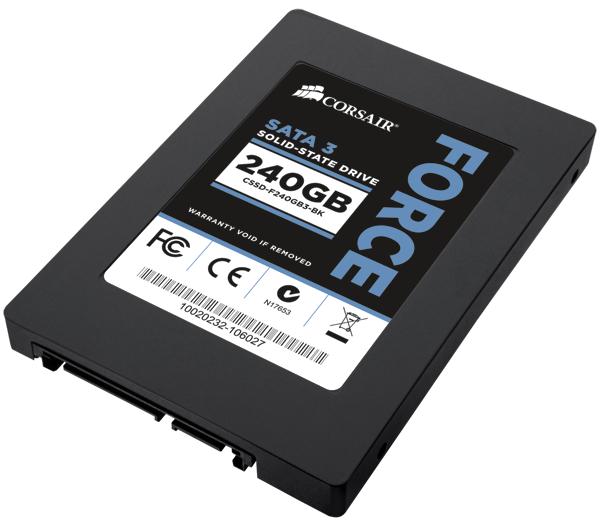
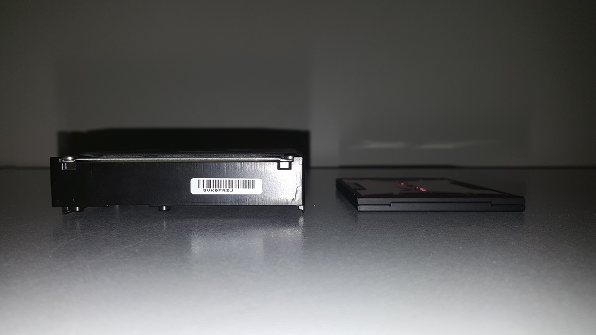
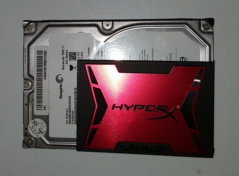
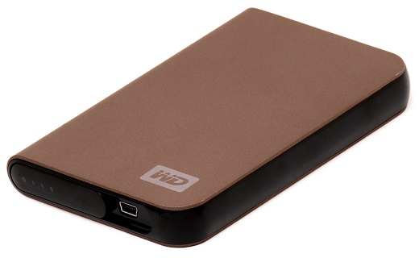

HDD/SSD - Hard drive
 

Introduction
Today we are going to take a look at the long time memory in your computer, this is the hard drive and a solid state drive. The work that these two components have is to store data, for example your pictures, music, documents, movies and games. The standard mechanical disk stores data by using discs and magnetism. The SSD uses a new technology, it uses something called a flash chip, and we use these chips in RAM memories and USB memories as well. This makes the SSD a lot of faster, but it also makes it very expensive. The price of SSD units is much higher per gigabyte than on HDD units. So I recommend you to combine these two when you buy a computer, why? Because you can install your operating system along with the games on the SSD so the computer gets much faster and you can install all documents, music, movies and pictures on the HDD because you don’t need these to be very fast. The SSD unit can read and write data up to 500 MB per second and the HDD unit can read and write data up to 80 MB per second, now you see how many times faster they are. The most common physical sizes of the hard drives is 3,5 inches and 2,5 inches. The SSD usually has the physical size of 2,5 inches as well.
Geek facts
There are many different ways to store data. The two most common types of hard drives is the usual mechanical hard drive and the solid state drive, also known as the SSD. A standard hard drive stores data by using discs and magnetism. The SSD is using a new technology, the technology allows us to store the data up to two times faster than on a mechanical disk. The SSD unit does not use the discs or magnetism it uses flash chips, it is used in RAM-memories and it allows is to get the information incredibly quickly. This makes an SSD incredibly good and fast, the problem arrives when you look at the price. The price of SSD units is much higher per gigabyte than on HDDs. The best thing you could to is to combine a HDD with a SSD if you’re buying a computer. For example, install the operating system on the SSD-unit and some games that you play and then the other things like programs, music, movies, pictures and documents on the HDD unit. If you are investing a good amount of money then I recommend you to buy a SSD unit for only the operating system and one for only the games that you play, if you want more memory to store other documents then you can have a hard drive as a reserve.
HDD/SSD who win?
The speed of a SSD unit is a lot faster than on a mechanical disk so just for an example, it is common that a SSD can read or write data up to 500 MB/s or more, meanwhile a regular mechanical HDD can only read and write data up to 80 MB/s. If you have the operating system on a SSD unit you will get to de desktop twice as fast when you start the computer if you compare with a HDD unit.
Sizes
The two most common physical sizes of the hard drives are 3.5’’ and 2.5’’. 3.5’’ is the most the most usual size in desktop computers and the 2.5’’ usually occurs in the laptops. A solid state drive also has the size of 2.5’’. The advantage of the large disks is that they can have much more memory than a disk with the size of 2.5’’ if it is a mechanical disk. A 3.5’’ mechanical disk can store up to 8 TB and a smaller 2.5’’ can only hold up to 2 TB.
Performance and speed
The performance can be seen in different ways, for example speed. The speed is measured in RPM(Revolutions per minute) just like the fans on your graphics card or if you have extra fans in your computer box. The rpm system shows how much it spins per minute. Most 3.5’’ spins around between 5400-7200 RPM while the smaller 2.5’’ usually spins with the speed of 5400 RPM. Just like in a processor the speed does not tell us everything about how good the component is. If the hard drive has better print heads and a more clever reading it increases the performance even more. Cache memory is something that the hard drives also has. Cache is a feature that allows the data that has been recently used to be stored in a cache memory sections. It allows us to obtain access to the data faster than the hard drive is really capable of. There have been many different ways to connect a hard drive to the motherboard. Today we use something that is called SATA. It stand for Serial ATA and it is usually used in all modern computers since it replaced the predecessor EIDE completely. The reason they changed the EIDEs is because SATA is much better in many ways. For example, the connectors and cables are much smaller, much smaller. The cable is easier to pull inside the chassis since it is smaller. It provides a sleeker and more stylish chassis that provides better ventilation which is important, at least the ventilation. SATA is capable of higher transmission and that allows the computer to run faster since it can transfer data faster. You only use one cable per unit, so one cable for the optical units and the hard drives and so on.
Sata cables
There are different types of SATA cables with different speeds, SATA 1.5 GB/s, SATA 3 GB/s and SATA 6 GB/s. These cables are only different because of their speed. There are also other types of SATA cables. For example, the Slim-SATA that you often use to the DVD player inside of a small laptop. It is used in the laptops because the cable is slim as you can hear in the name. Another cable is the Micro-SATA cable, it is usually used for 1.8’’ units, this is a cable that consists with power connection and data connection
External hard drive
There are also something that we call external hard drives. A hard drive that is external is a hard drive that is outside of your computer and that can be plugged in to your USB port for example. When you plug it in it is like a regular internal hard drive. There are various cables to connect an external hard drive but the USB 3.0 port is the fastest since it can almost transfer up to 10.000 MB/s.